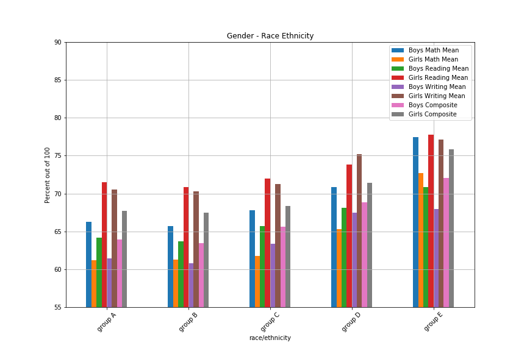
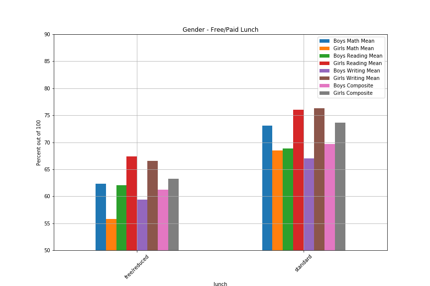

Student Test Scores
What affects them?
Overview
Student performance is always a primary issue when it comes to education. Parents, teachers, administration, community leaders are always concerned about how well students perform. Much of our tax dollars goes into funding education and everything that it involves. So what are the primary drivers that determine student success? This project aims to get an idea of what those drivers to success are and what can be done to improve student performance. The data set that we are working with is simulated data that depicts student standardized tests scores in a ficticious public school. This data includes common metrics that are looked at by education professionals, albeit, given the simulated nature of this data, it is a bit limited in scope. None the less we are able to get a good idea of what this data is telling us with respect how students perform and why.
The Data
This data comes from a graduate student at BYU named Royce Kimmons who specializes in the relationship between technology and education.
The link to his website can be found here. http://roycekimmons.com/

This data contains the following columns.
- Gender - This one is pretty self explanitory
- Race/Ethnicity - For the sake of not playing into stereotypes it's randomized.
- Parental Level of Education - This is metric of family support with respect to a student's education.
- Lunch - Whether or not the student recieves free or subsidized lunch as a measure of poverty.
- Test Preparation Course - Exactly what it sounds like. For our purposes we're using it as a metric of intervention in student performance.
- Math score
- Reading score
- Writing score
- Composite score - this is a metric that we generated and it's an average of the previous three.
Overall Test Averages
These were some pretty expected observations that fit into societal stereotyes. The boys overall scored better on average in math. Girls scored better in reading and writing. This data shows a racially based achievement gap between what appear to be the higher achieving groups, those being Groups D and E and the lower achieving groups A and B. When it comes to parental level of education, the scores basically corespond with the parents level of ed -- the higher the parent's achievement the higher the kid's scores tended to be. The most intersting takaway here is that the students who have parents that have completed a degree score pretty significantly higher.
Free/reduced lunch recipients seemed to show a sizeable gab with about an 11% different between their paid lunch classmates. This is a metric that indicates poverty, poverty is definitely an indicator. The test prep course overall appears to help quite a bit as well.


Already we can see an achievement gap between group E and groups A and B. Also there is an education based achievement gap that is particularly large between children with parents that have not finished high school and children with parents that hold an advanced degree. Below are some charts that reflect these findings.The bar graph also clearly shows an economic achievement gap in the lunch chart.
Data By Gender
This series of graphs breaks down the mean test scores by gender vs ethnicity, parent's education, and whether or not the child is getting free lunch. While this series a graphs follows the same trajectory as those prior, two trends become apparent. That is, exactly how much math scores struggle for girls from more disadvantaged demographics. The same can be said for boys and writing. The more disadvantaged the demographic, the worse the mean score is particularly for children of the least educated parents.



These charts mostly reinforce what is discussed at the beginning. Something that is notable is that with the exception of math, girls tend to produce better test scores. That is true across all demographics, at least according to this data. Something that we believe is of note is that the reading score seem sto be very closely correlated with writing. If the reading score is good, so is writing.